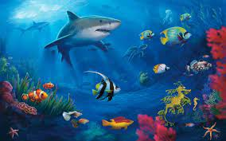

Bienvenidos
al sitio web : Ecosistema Marino
Los ecosistemas
marinos son un tipo de ecosistema acuático, caracterizados por la
presencia de
agua salada como su principal componente. Dentro de los ecosistemas
marinos se
incluyen, a su vez, diferentes ecosistemas, como los océanos, mares,
marismas,
arrecifes, aguas someras litorales, estuarios, lagunas costeras de agua
salada,
costas rocosas y las zonas costeras
